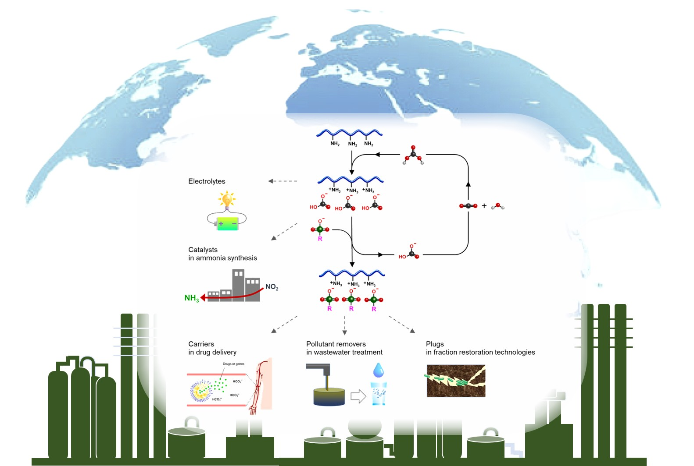
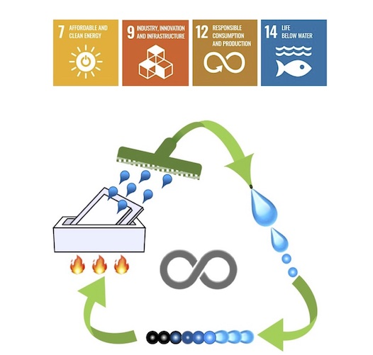
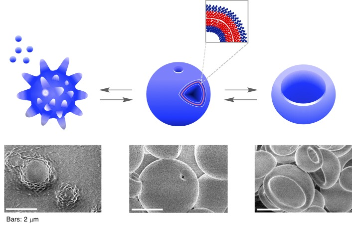

Home Research Publications Biography Contact

Reproduced from E. Yoshida, Chem. Commun. 2026, 62, 21109-21125, DOI:10.1039/D6CC04212K, with acknowledgement to the Royal Society of Chemistry.
To address global warming intensified by increasing CO2 emissions, the Yoshida Lab has developed novel methodologies for CO2 capture and utilization using polymeric amines. These methodologies involve the application of CO2-captured polymers as scavengers of water-soluble pollutants for water purification, polymeric surfactants that form nanoarchitectures through self-assembly, and cationic polyelectrolytes for the formation of polyion complexes with dissociation-based recyclability. These strategies have the potential to contribute to reducing both CO₂ emissions and fossil fuel consumption.

Reproduced from E. Yoshida, RSC Sustain. 2023, 1, 2058-2065, DOI:10.1039/d3su00207a, with acknowledgement to the Royal Society of Chemistry.
Establishing closed-loop recycling systems is essential to addressing the growing problem of plastic waste. The Yoshida Lab has developed a simple chemical recycling method for waste plastics, such as polystyrene foam and poly(methyl methacrylate) boards, through vacuum pyrolysis depolymerization using a spirit lamp. This method enables simultaneous depolymerization and fractionation, allowing high-purity monomers to be recovered while less volatile oligomers, when formed, remain in the reactor. Potentially applicable to various non-biodegradable plastics with carbon–carbon backbones, this approach offers a promising strategy for reducing plastic waste pollution and fossil fuel consumption by recovering valuable chemical feedstocks.

Reproduced from E. Yoshida, Colloid Polym. Sci., 2022, 300, 497-508. DOI:10.1007/s00396-022-04958-2. © Springer Nature.
Micron-sized giant vesicles are viable artificial models for biomembranes of cells and organelles, based on their similarities in size and structure. The Yoshida Lab has fabricated artificial biomembrane models using synthetic polymer vesicles. These were prepared by the polymerization-induced self-assembly method, utilizing the nitroxide-mediated photo-controlled/living radical polymerization technique developed by this lab. The vesicles are composed of amphiphilic diblock copolymers, featuring a hydrophilic poly(methacrylic acid) block and a hydrophobic poly(alkyl methacrylate-random-methacrylic acid) block. The polymer vesicles can replicate static and dynamic morphologies of biomembranes, including villus-like structures for the digestive system, anastomosed tubular networks with fenestrated sheets for the endoplasmic reticulum and Golgi apparatus, perforated vesicles for the nuclear envelope, cup-shaped vesicles for the isolation membrane formed during the early stages of autophagy, neuron-like tubular extensions, and human erythrocyte-like morphology transformations. These findings contribute to understanding the differences between inanimate and animate matter, promising insights into the origin of life and the fabrication of artificial life using non-natural synthetic inanimate materials.